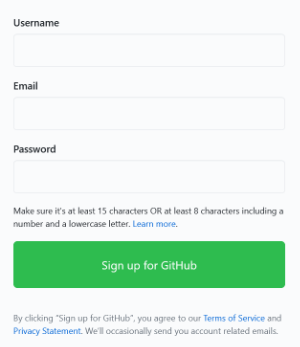
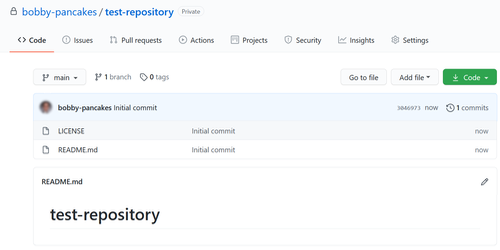

This guide shows you how to create a portfolio website and use Git workflows with GitHub and Netlify to set up continuous Deployment. By the end of this guide, you'll have a functioning website that anyone with internet access can visit.
There are two versions of this guide: this one for using Netlify and GitHub, and another one for uploading yourportfolio directly to Netlify. If you want to use a Git workflow and continuous deployment check stay on this page. If you don't want to deal with Git, check out the other version.
You don't need to follow this walkthrough exactly. If you know what you're doing, skip around. The worst thing that can happen is your site doesn't go live. Which means you get to troubleshoot and make it better. ✨
What you will need
In this guide, I'll use Visual Studio Code (VS Code), GitHub, and Netlify. If you want to use a different text editor, repository host, or other tool/service, go for it!
- GitHub account
- Netlify account
- Text editor
- Basic HTML
- Basic CSS
What you won't need
- Paid tools or services
- JavaScript
- Command line
- Servers
- CMS
Set up GitHub
GitHub is a git repository host. You can think of it as a sort of file storage service. There's a lot more to it than that, but we won't get into the details of git or GitHub in this walkthrough.
Creating a GitHub account
-
If you don't have a GitHub account, go to GitHub.com. On the main page, enter your information, then click Sign up for GitHub.
Note: You may need to verify that you're a human at this point.
-
On the Welcome to GitHub page, select your answers, then select Complete Setup.
-
Verify your email address.
Creating a repo in GitHub
-
After signing into GitHub, on the home page (github.com), select Create repository.
-
Ensure you're the repository owner and enter a repository name.
-
Optionally, you can add a description for the repository.
-
Choose whether you want the repository to be visible to other people (public or private).
-
Optionally, choose to include a README file, .gitignore file, or a license.
-
You should definitely include a README file to document your work.
-
If you don't know what a .gitignore file is, you probably don't need it.
-
If you don't know what license to choose, the MIT or Mozilla Public License are good places to start.
-
-
After all of that, click Create repository. You should see something like this:

You can do a lot of things with a GitHub account. We'll come back to this repository later in the guide, but will make minimal use of it. If you want to learn more about GitHub (and git), check out the following Resources section.
Resources
- GitHub's short Hello World guide is a great place to start.
- You can also check out the other official GitHub guides.
- I personally love the Git and GitHub for Poets YouTube series.